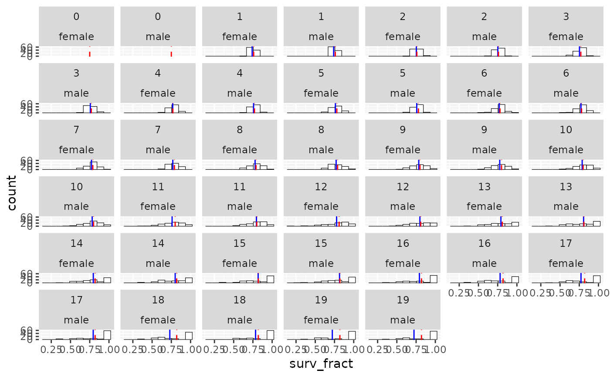

summarize_survival_from_census.RdThe prekill census in year t+1 is the post-kill census in year t, so we can use the prekill census to record the realized fraction of individuals of each age and sex that survived the death episode in each year. In the output survival in year t is the fraction of j-year olds in year t that survive to be j+1 year-olds in year t+1.
summarize_survival_from_census(
census,
fem_surv_probs = NULL,
male_surv_probs = NULL,
nbins = 10
)a tibble of census counts with columns year and
age, and then the counts of the different sexes in columns
named male, and female.
a vector of the parameters used for the simulation. If present these are put on the histogram plots. If you provide one of these, you have to provide both.
a vector of the parameters used for the simulation. If present these are put on the histogram plots.
number of bins for the histograms
A list with components:
survival_tibble: A tibble with the following columns:
year: The year
pop: The population whose census is being counted
age: The age of individuals
sex: The sex of individuals
n: The number of individuals alive and present of sex sex and age age in year
year in pop pop.
cohort: The birth year of these individuals
surv_fract: The fraction of the n individuals that survive to have age age + 1 in
year year + 1.
plot_histos_by_age_and_sex: A ggplot object of histograms of observed survival fractions
facet-wrapped by age and sex. Blue vertical lines are the observed means and dashed vertical
red lines are the expected values given the simulation parameters.
This function does not track migrants. Another one is eventually in order that accounts for migrants out of the population. Also, the plots here might not play well with multiple populations.
result <- summarize_survival_from_census(
species_1_slurped_results$census_prekill,
species_1_life_history$`fem-surv-probs`,
species_1_life_history$`male-surv-probs`
)
# print the results if you want
result$survival_tibble
#> # A tibble: 4,000 × 7
#> year pop age sex n cohort surv_fract
#> <int> <int> <int> <chr> <int> <int> <dbl>
#> 1 20 0 20 female 1 0 0
#> 2 20 0 19 female 2 1 1
#> 3 21 0 20 female 2 1 0
#> 4 20 0 18 female 2 2 0.5
#> 5 21 0 19 female 1 2 1
#> 6 22 0 20 female 1 2 0
#> 7 20 0 17 female 3 3 0.667
#> 8 21 0 18 female 2 3 1
#> 9 22 0 19 female 2 3 1
#> 10 23 0 20 female 2 3 0
#> # … with 3,990 more rows
result$plot_histos_by_age_and_sex
